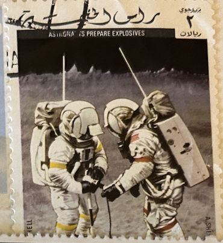
| SOURCE | TITLE| IMAGE MATCH | click to source page |
| Dreamstime.com | 1,073 Stamp Emirates Stock Photos - Free & Royalty-Free Stock Photos from Dreamstime - Page 6 | 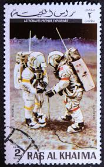 |
| The Atlantic | Photos: Apollo 17—The Last Time Humans Walked on the Moon - The Atlantic | 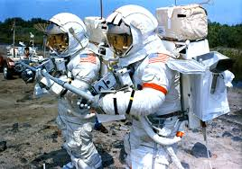 |
| Fine Art America | Neil Armstrong And David R. Scott In 1966 Art Print by Nasa / Science Photo Library - Fine Art America | 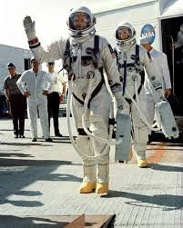 |
| Wikipedia | File:Lovell pre-launch gemini 7.jpg - Wikipedia | 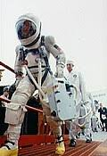 |
| eBay | 8 X 10" NASA STS 64 PHOTO LITHOGRAPH "ASTRONAUT TEST EVA SELF-RESCUE DEVICE EX C | eBay | 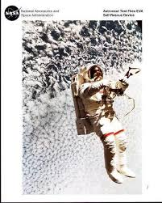 |
| COMC.com | 1970 Jenkki Hellas Kuumatka Jenkki - Gum [Base] #13 - Buzz Aldrin, Neil Armstrong | 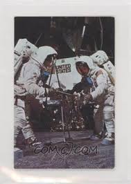 |
| Wikimedia.org | File:Young and Duke begin a simulated traverse.jpg - Wikimedia Commons | 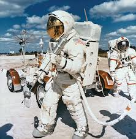 |
| Wikipedia | Gemini 5 – Wikipédia | 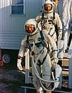 |
| eBay | Tom Sachs Book | eBay | 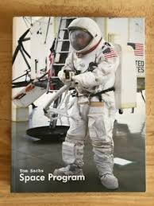 |
| Flickr | a17_v_c_o_AKP (EVA trng, McDonnell Douglas photo, print no… | Flickr | 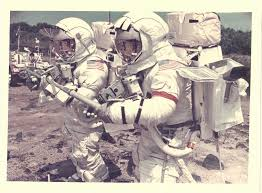 |
| PICRYL | KSC-66C-1869 Astronauts Neil Armstrong and David Scott leave Suiting Trailer and enter Transfer Van at Cape Kennedy prior to boarding their Spacecraft for Gemini 8 Mission. (jrs) 104-KSC-66C-1869 - PICRYL - Public | 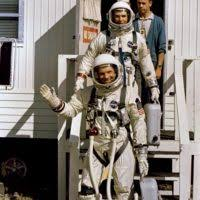 |
| WIRED | Spacewalks That Never Were: The Gemini Extravehicular Planning Group (1965) | WIRED | 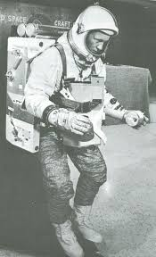 |
| Brewminate | Robert Rauschenberg's 'Signs': Iconic Symbols of 1960s Culture Brewminate: A Bold Blend of News and Ideas | 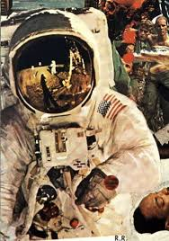 |
| sciencephotogallery.com | Neil Armstrong And David R. Scott In 1966 Framed Print by Nasa / Science Photo Library - Science Photo Gallery | 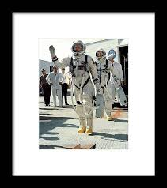 |
| eBay | Emu NASA | eBay | 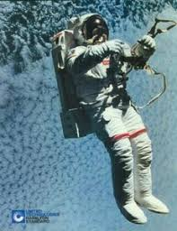 |
| eBay | Ras al Khaima ~ Astronaut w/Modular Equip Transporter ~ 3¢ Air Mail Stamp ~ UAE | eBay | 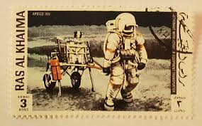 |
| eBay | 1969 NASA 8 DAYS IN JULY THE FLIGHT OF APOLLO 11 SET OF 2 ENGLISH UNIQUE ARABIC! | eBay | 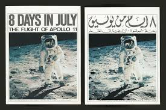 |
| Etsy | NEWSWEEK OCT 14 1968 Original Vintage Magazine Next Stop the Moon - Etsy | 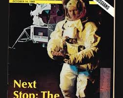 |
| NASA (.gov) | 50 Years Ago: The Journey to the Moon Begins - NASA | 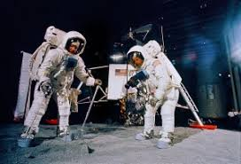 |
| Snopes | No, This Photo Isn't Evidence the Moon Landing Was Staged | Snopes.com | 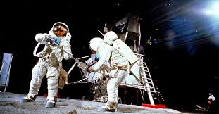 |
| Bridgeman Images | Image of An image of the planet Mars taken from the Viking by Unknown photographer, (20th century) | 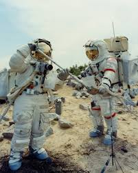 |
| Dreamstime.com | Postal Stamp Laser Stock Photos - Free & Royalty-Free Stock Photos from Dreamstime | 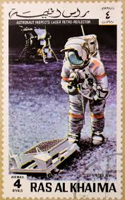 |
| K-BID.com | 1969 Apollo II Astronauts: Armstrong, Aldrin, Collins First Men on by Moon July 20, 1969 Poster by John Berkey New in Sleeve | Brown and Bigelow Archives April Auction - Archives, Art | 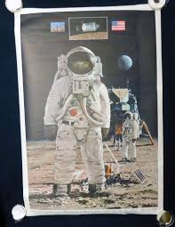 |
| eBay | Moon Landing Time Magazine | eBay | 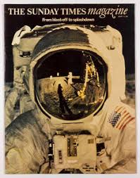 |
| Chron | The story behind the 'fireflies' that astronaut John Glenn saw in space | 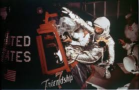 |
| WorthPoint | Vintage Vari-Vue Hologram 3D Picture of the Apollo 11 Moon Landing 1969 Framed | #4650595225 | 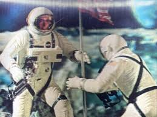 |
| Invaluable.com | Sold at Auction: NASA First Aid Kit | 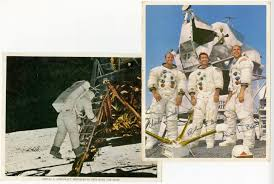 |
| Amazon.com | Amazon.com: No Strangers To Exploration : Radio Orphans: Digital Music | 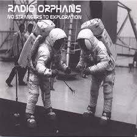 |
| PICRYL | KSC-66C-1851 Astronauts Neil Armstrong and David Scott leave Suiting Trailer to enter Transfer Van, Complex 19, Cape Kennedy prior to boarding their Spacecraft for Gemini 8 Mission. (jrs) 104-KSC-66C-1851 - PICRYL - | 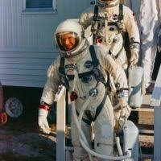 |
| MutualArt | NASA | [Mercury Redstone 3] The first American in space: Alan Shepard inside Freedom 7 before launch; “Why don't you fix your little problem and light this candle?” (1961) | MutualArt | 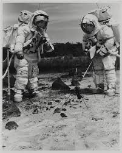 |
| Palm Beach Modern Auctions | NASA Apollo 14 Mission Poster, Crew/Astronauts Signed sold at auction on 24th February | Palm Beach Modern Auctions | 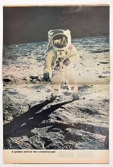 |
| Pikwizard | Astronaut Walking on Moon Near TV Camera, Apollo 14, 1971 - Free Stock Photo | Pikwizard | 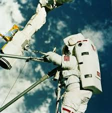 |
| Amazon.com | Amazon.com: NASA Astronaut Jerry Ross Training in WETF 8x10 Photograph Photo Print: Posters & Prints | 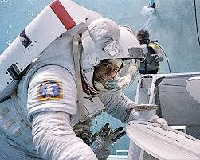 |
| reframedphotos.com | Apollo 14 Collection (8 vintage prints) – Reframed | 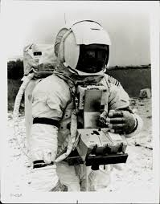 |
| NPR | Mercury Rising': How Cold War Fears Helped Launch America's Early Space Program : NPR | 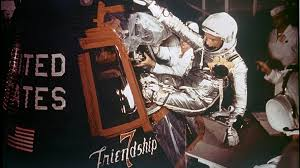 |
| eBay | 1972 NASA S-72-44420 Apollo 17 - Red Number A Kodak Paper Genuine Photo L266C | eBay | 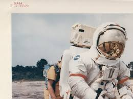 |
| Apollo 14 Moon Shot - Hosted by Google | 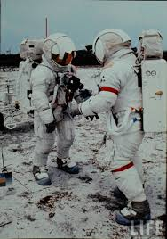 | |
| Astronaut Edward H. White, II | Facebook | 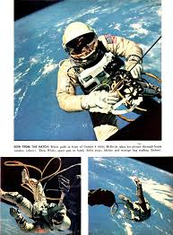 | |
| beaconmedia.com.au | How many stars | 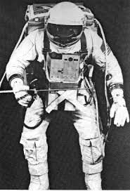 |
| Old postcards | Gemini – IV spacewalk, astronaut Edward H Whyte the second Space Postcard | OldPostcards.com | 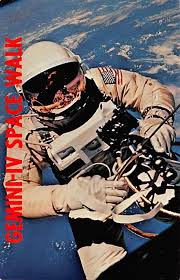 |
| springer.com | PROFESSOR BORIS EVGENYEVICH PATON WILL CELEBRATE HIS 90TH BIRTHDAY IN NOVEMBER | 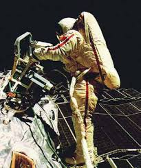 |
| Fine Art Storehouse | Giant Robert Wadlow Escorting Stewardess off Airplane Print. Art Prints, Posters & Puzzles from Fine Art Storehouse | 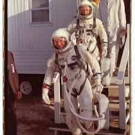 |
| Substack | Starry Starry Night - Big Honey — Michael Yon in Action | 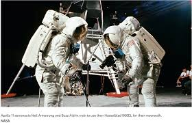 |
| Wikipedia | Fichier:Lovell pre-launch gemini 7.jpg — Wikipédia | 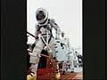 |
| Arizona Daily Star | 55 years ago today, Tucson's Frank Borman saw 'Earthrise' | 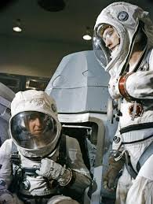 |
| Senior Aerospace BWT | Senior Aerospace BWT invests in Stratasys printers - Senior Aerospace BWT | 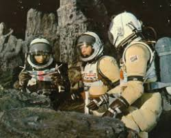 |
| Dreamstime.com | Postage Stamp Printed in Ras Al Khaimah Shows Astronaut with Transporter, Apollo 14 Serie, Circa 1972 Editorial Stock Image - Image of astronaut, holland: 167461919 | 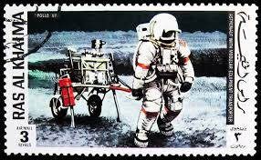 |
| Cru.org | THE UNIQUENESS OF EARTH | 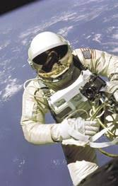 |
| On March 18, 1965, Alexey Leonov stepped outside of Voskhod-2 to begin the world's first spacewalk. Once in space, his suit over-inflated, making it too big and stiff to re-enter the airlock. | 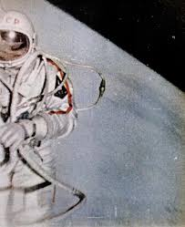 | |
| Imgflip | Meme Bias - Imgflip | |
| Apollo 12, \ | ||
| Wikimedia.org | File:Apollo 12 EVA training session in Flight Crew Training Building at KSC.jpg - Wikimedia Commons | |
| eBay | Space Postage United Arab Emirates Stamps for sale | eBay |  |
| Art.com | Evaluation of SAFER EVA Backpack, STS-64' Photographic Print | Art.com | |
| Dreamstime.com | Old Post Stamp of Ras Al Haima Editorial Photo - Image of oman, space: 111492711 | |
| 99Prints NYC | NASA Gemini 4 Astronaut Ed White Spacewalk - Pacific Ocean – 99Prints NYC | |
| RR Auction | Bruce McCandless (2) Signed Photographs | RR Auction | |
| eBay | Lot of 5 Diff July/1969 Moon Landing Daily News Complete Newspapers | eBay | |
| Bidsquare | Shannon Lucid NASA Photo from Star Tribune Archive for sale at auction on 24th July | Bidsquare | |
| Christie's | The “deep space” EVA of Ken Mattingly; the full Moon after transEarth injection; the crew back to Earth, April 16-27, 1972, Camera on Apollo 16; K. Mattingly, J. Young, or C. Duke; NASA | Christie's |
{kind=link}
{kind=link}
{kind=link}
{kind=link}